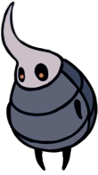
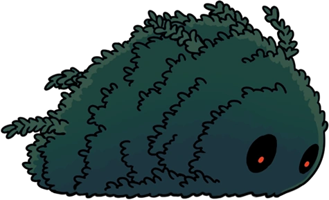
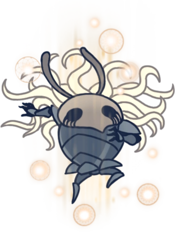

Vertchemin
Une région se situant à l'ouest des Routes Oubliées. Cet endroit possède une végétation luxuriante et des flaques d'acide brûlantes gardée par des insectes recouverts de feuillage.
Carte
Lore
Vertchemin est une caverne verte exubérante, composée d'une végétation diversifiée, de vallées moussues et de larges lacs d'acide. Ces caractéristiques se reflètent profondément chez ses habitants, qui ont développé un camouflage naturel, leur permettant de se fondre parfaitement dans leur environnement. Partout à Vertchemin, des piliers et des pierres en forme d'oeuf aux sculptures tourbillonnantes, atteignant parfois des tailles énormes, peuvent être fréquemment repérés.
Connexions
Vertchemin est relié à ces zones :
Ennemis
-
Lumafly Chargée

En cas de danger, ces créatures se regroupent et génèrent de l’électricité. Ce sont des créatures calmes. Cependant elles se rassemblent parfois en groupe et projettent des éclats foudroyants de lumières, qui étourdissent et brûlent même de grandes bêtes telles que moi. Observez-les et attendez le bon moment pour vous frayer un chemin sans vous faire remarquer.
-
Crawlid

Un charognard timide. Arpente les cavernes à la recherche de nourriture. Triste et pitoyable. Mérite à peine d’être tué.
-
Duranda
Une simple créature volante. Son corps est protégé par une coquille épineuse. Ces créatures ignorent les passants, car elles se croient totalement protégées. Attaquez son visage et apprenez-leur qu'elles ne sont pas à l'abri de tout.
-
Durandoo

Une simple créature sur pattes, possédant d'une coquille dure. Pataugeant souvent dans les bassins peu profonds d'eau acide. Une des rares créatures pouvant survivre dans les eaux acides qui coulent autour de nous. D'où peut bien provenir cette eau, qui éjecte des bulles avec une haine bouillonnante contre les êtres vivants ?
-
Mangesot

Plante carnivore. Ferme soudainement sa mâchoire lorsqu'une créature s'approche de trop près. Il faudrait vraiment être un idiot pour se faire piéger par une plante.
-
Gulka
Une plante agressive. Se rétracte pour se protéger quand elle se sent en danger. Lance des boules d'épines quand les ennemis sont à distance. Leurs feuilles sont sèches et ternes. Leur bourgeon est désagréablement amer. Par contre, le venin qui se trouve dans les boules qu'elles projettent est exquis ! Si cela vous tente, essayez donc d'en boire un peu et profitez de ses effets.
-
Carcasse Malmeneuse

La carapace vide d'un insecte, animé par une force étrange. Attaque férocement toutes les créatures sur son chemin qui ne sont pas infectées. Ces corps sans vie ambulants sont remplis d'une brume orange épaisse. Ça a un goût un peu sucré et maladif. C'était vraiment immonde. Je vous conseillerais de ne pas les manger après les avoir tués.
-
Carcasse Cornue
La carapace vide d'un insecte, animé par une force étrange. Utilise sa longue corne pour attaquer toutes les créatures sur son chemin qui ne sont pas infectées. Même après leur mort, ces insectes sont tellement arrogants. Ils sont beaucoup trop fiers de leur longue corne ! J'aime bien la leur arracher.
-
Carcasse Sauteuse
La carapace vide d'un insecte, animé par une force étrange. Il saute et attaque instinctivement toutes les créatures sur son chemin qui ne sont pas infectées. Les insectes de l'ancien Hallownest ne chassaient pas eux-mêmes leur nourriture. Ils préféraient qu'elle leur soit directement apportée. Cela explique pourquoi ils étaient si faibles. Cela explique aussi pourquoi leur royaume s'est effondré pour disparaître dans l'oubli.
-
Mouche Masquée

Une créature volante inoffensive. Préfère les environnements calmes et se déplace habituellement en groupe. Ces créatures restent toujours sur leur garde et quand l'une d'elles s'éloigne trop loin, le reste du groupe ira la rejoindre. Je me demande ce que l'on ressent quand on est protégépar tous les membres de son groupe.
-
Emboutisseur Moussu
Une créature timide. Elle effraie les intrus en se recouvrant d'énormes touffes de mousse. Ces créatures sont petites, mais elles ont beaucoup de courage et de force après s'être complètement couverte de feuillage. Je peux moi-même comprendre le désir de se camoufler...
-
Rampant Moussu

Une faible créature ailée qui se recouvre de feuilles pour paraître plus large.Elle se cache dans les broussailles. Autrefois, je pensais que ces créatures n'étaient que de simples plantes. Quand j'ai appris qu'elles étaient des organismes vivants, je me suis mis à les tuer dès que j'en trouvais. C'est la loi de la chasse.
-
Moussues
Un insecte semblable à une plante. Charge les intrus quand ils s’approchent de trop près.Ces insectes peuvent être difficiles à repérer parmi les broussailles, jusqu’à ce que vous vous en approchiez de trop près et qu’ils vous chargent soudainement. Restez prudent.
-
Chevalier Moussu
Gardien de Vertchemin. Entraîné au maniement de l'aiguillon et du bouclier. Ils se dissimulent en prenant la forme de petits tertres broussailleux et paraissent tout doux, mais méfiez-vous de ces guerriers ! Ils sont redoutables en combat, protégeant férocement quelque chose qui est caché profondément dans Vertchemin.
-
Obble
Un insecte volant, gras et lent. Il reprend fréquemment un liquide acide qu'il conserve dans son corps rond. Est-ce que ces insectes réalisent qu'ils sont de véritables nuisances ? Ils rependent leurs sucs nocifs partout où ils vont ! Si vous en croisez sur votre chemin, assurez-vous de bien les tuer.
-
Moustique
Charge ses proies avec son proboscis allongés comme une aiguille. Quand ces créatures vous attaquent, ne perdez pas votre sang-froid. Maintenez votre position et attendez qu'elles viennent à vous pour contre-attaquer.
-
Tiktik

Une créature se servant de ses petites griffes acérées pour grimper le long des murs et sur les toits. Passe son temps à arpenter les routes et les cavernes proches de la surface de ce royaume. Si vous êtes patient, il vous suffit d’attendre qu’elles viennent à vous pour les tuer.
-
Mouche Vengeresse

Un prédateur volant. Poursuis ses proies sans relâche. Ces féroces petits chasseurs pourchasseront même les créatures qui font plusieurs fois leur taille. Admirable! Cependant, j’en ai dévoré des centaines sans avoir fait le moindre effort, car ce sont des créatures très faibles.
-
Mouche moussue

Une faible créature ailée qui se recouvre de feuilles pour paraître plus large. Elle se cache dans les broussailles et fuit les prédateurs qui s'approchent trop près. Ces créatures passent toute leur vie à se cacher ou à fuir ? Cela est tellement triste. Ou bien, peut-être qu'elles aiment ce genre de vie et qu'elles ont choisi elles-mêmes de vivre ainsi. Je pense que ce serai une chose étrange, mais pas impossible.
-
Carcasse Vagabonde

La carapace vide d'un insecte, animé par une force étrange. Erre sur les routes où elle vivait autrefois. Ces insectes "civilisés" d'Hallownest étaient faibles de leur vivant et ils sont tout aussi faibles après leur mort. Réduisez-les à l'état de poussière !
-
Aluba

Une créature volante passive. Elle vit tout près des eaux acides. Ces créatures vivent une vie dangereuse. Si l'une d'elles venait à s'approcher du sol...
-
Grimm Novice

Jeune et espiègle membre de la Troupe de Grimm. Dans le cadre du rituel, il rassemble la flamme écarlate dans sa torche. Il abandonnera la flamme une fois vaincu. Les ombres rêvent d'un feu sans fin. Les flammes dévorent et les braises s'affrontent. On allumera la lanterne du cauchemar. Appeler et servir dans la Troupe redoutable de Grimm.
Boss de la Zone
Hornet Protectrice

Hornet est la fille d'Herrah la Bête, la reine du Nid-profond et du Roi Pâle. Sa naissance était le résultat d'une alliance pour que sa mère devienne un Rêveur, elle n'a donc passé que peu de temps avec Herrah. Elle a partagé son père avec le Chevalier et le reste des Vaisseaux, ce qui fait d'eux des frères et soeurs. Élevée dans le Nid-profond par les Tisserands, Hornet a survécu à l'Infection et à la chute du royaume. Elle erre dans les ruines, chassant les voyageurs qui chercheraient a les profaner, mais elle protège aussi le sceau de l’Oeuf Noir. Elle garde également la Carcasse abandonné des Frontières du Royaume qui contient la Marque du roi, la clé des Abysses. Elle a rencontré Quirrel dans les Falaises Hurlantes à son arrivée à Hallownest. Elle a tenté de le combattre mais a été repoussée par le masque de Monomon l’Érudite qu'il porte sur sa tête. Hornet le laisse après avoir reconnu le masque, sachant qu'il a été appelé, bien qu'il ne le sache pas. Comme Quirrel et le Chevalier, elle a senti le réveil de L'Infection et a commencé à errer à Hallownest à la recherche de réponses. Elle s'efforce d’arrêter la catastrophe imminente qui se profile sur Hallownest.
Emboutisseur Moussu Massif
L'Emboutisseur Moussu Massive se trouve sous une structure en ruine, à l'ouest de l'entrée des Brumes Canyon. Il apparaît d'abord comme un grand buisson, mais il commence à trembler lorsque le Chevalier s'approche et finit par rugir avant de se lancer à sa poursuite. Une fois vaincu, il se révèle être un groupe d'Emboutisseur Moussu (sans leur mousse) qui s'enfuient en courant et rampent sous terre.
Mouche Vengeresse Royale

Les Mouches Vengeresses Royales sont les patriarches territoriaux des Mouches Vengeresses et sont originaires de Vertchemin. On peut en rencontrer une au-dessus des routes de Vertchemin, accrochée au plafond en train de mâcher Zote. Si le Chevalier l'attaque, elle libère Zote et le combat. En cas de défaite, l'Infection la fait exploser. Si le Chevalier laisse Zote mourir, la Mouche Vengeresse Royale le dévore avant de disparaître.
Sans-yeux
Sans-yeux est l'une des Guerrière des Rêves. Elle était un guerrier de Hallownest qui tomba sous L’Infection. Elle ne pouvait pas dormir sachant que les rêves infecteraient son esprit avec la lumière. Pour se protéger elle et les autres insectes, elle leur a arraché les yeux et a arraché les siens avant de succomber. Elle repose au Sanctuaire de Pierre, un lieu plongé dans l'obscurité totale, et une statue sculptée à son effigie est placée sur sa tombe.
Évènements
- Obtention de la Cape d'ailes de papillon
- Obtention du Journal du Chasseur
- Obtention d'un morceau d'âme
- Obtention d'un morceau de masque
- Station Coléoptère : Station de Vertchemin
- Rencontre du Maître d’Aiguillon : Sheo
- Rencontre du Chasseur
- Rencontre d'Unn
- Rencontre de Zote le Redoutable #1